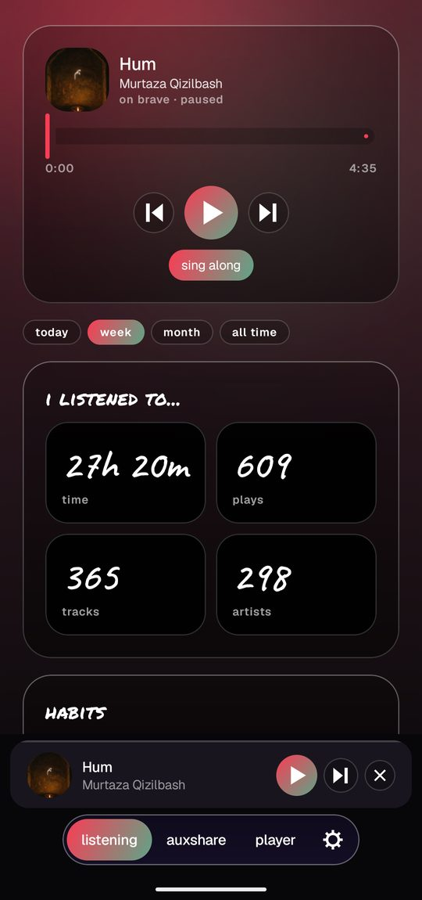
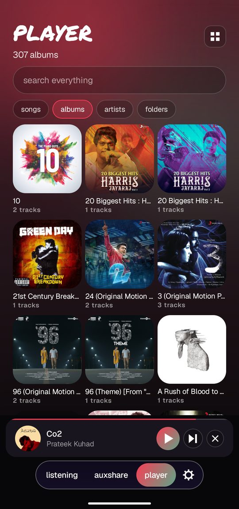
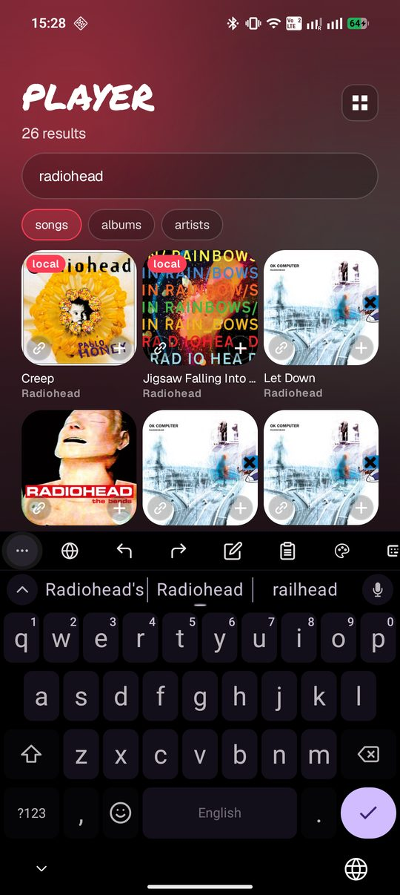
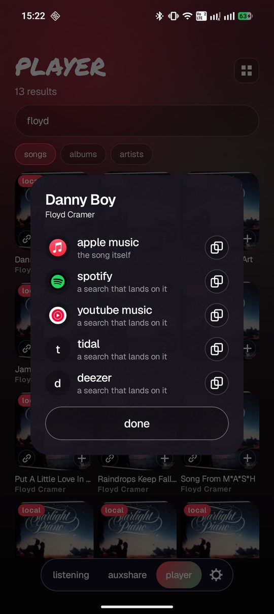
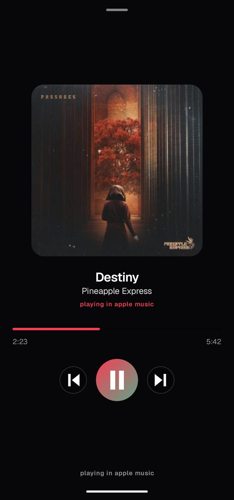
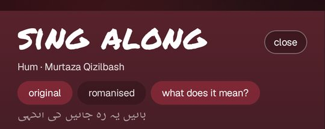
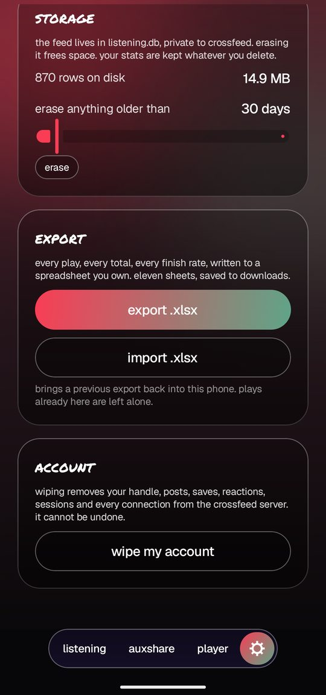
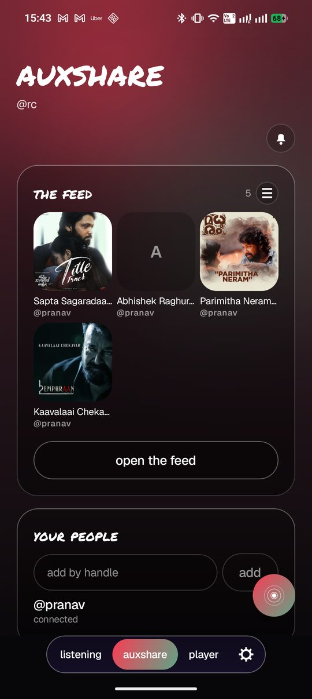
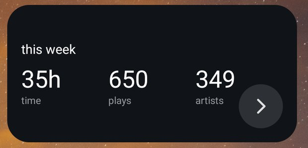
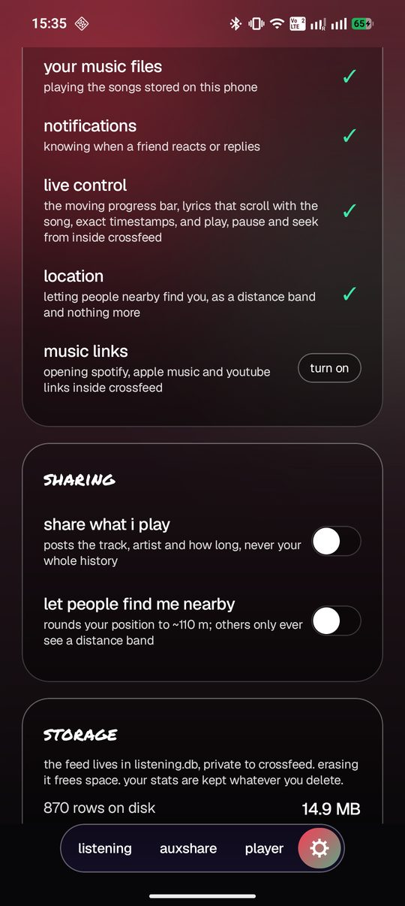

crossfeed
your listening diary, wherever you happen to be listening from.
spotify, apple music, a browser tab, the files on your phone. it all lands in one history that lives on the device and answers to you.
it counts, whoever is playing
crossfeed reads the now playing card that every music app on android already publishes. a song counts the same whether it came from spotify, apple music, youtube music in a browser tab, or a file sitting on your phone.
nothing is uploaded to make that work. there is no account, no scrobbling service in the middle, and nobody else holding a copy of what you listen to.
browsers and video apps are refused until you say otherwise. even then a video has to prove it is music, by naming an artist the catalogue actually lists, so lectures and clips stay out of your history.

a real player for the music you own
the files on your phone, sorted into albums, artists, songs and folders, with a queue, a full sheet and a bar that follows you around the app. play them here and they go into the same diary as everything else.
it plays flac, opus, mp3 and whatever else android will open, straight from your own folders. no library to import, no upload, no account.

one search box for all of music
search anything. results come back split into songs, albums and artists, mixing the tracks already on your phone with the wider catalogue. anything local is tagged, so you know what you can play on the spot.
every result carries a links button. tap it and the same song appears across apple music, spotify, youtube music, tidal and deezer, each with the service icon to open it and a copy button for sending it on.
share a link into crossfeed from anywhere and you get the same sheet, so a friend on another service can be answered in one tap. share a playlist and it opens into its songs, each one shareable in its own right.


drive spotify from in here
whatever is playing appears at the top of the page and in the bar above the tabs, with a scrubber, a play button and skip. pause apple music from inside crossfeed and apple music pauses.
it works because android hands out the controls, not because those apps agreed to anything. no api key, no developer account, no permission from spotify.

the words, and what they mean
lyrics scroll in time with the song. for anything not in your own language there is a switch that puts the meaning under each line as you go, in place, with no second screen.
translation runs on the phone. a language pack is fetched once and after that it works with no connection at all. the words themselves are never sent anywhere.

kannukkul kannai, composed by a. r. rahman, sung by naresh iyer. the words belong to their writers and rights holders, shown here only as the app displays them.
take it with you, and ask it anything
every play, every total, every finish rate, written to a spreadsheet you own. eleven sheets, saved straight to downloads.
which makes it something you can hand to any ai you like and simply ask. what did i play to death in march, what did i abandon halfway, what have i not touched since last winter. the charts in the app are a starting point, not the limit of what your own history can tell you.
it imports back too, so moving to a new phone costs you nothing.

a small room, not an audience
share what you are playing with the handful of people you actually swap music with. their faces sit at the top of the page while they are listening, so you can see what someone is in the middle of and join them.
the feed is sleeves rather than a wall of text. react to a song, reply with one of your own, save the ones worth keeping.
it stays off until you turn it on, it is people you added by handle and nobody else, and it can be paused for an hour or a day when you would rather not be watched. your diary stays on your phone either way. only what you choose to share ever leaves.

your week, without opening anything
time, plays and artists over the last seven days, sitting on the home screen. tap the corner and it turns over to show who among your people is playing something right now.
the figures come straight off the diary on the phone, so they are there whether or not you have a connection, and tapping the widget opens the app.

nothing on unless you say so
every permission is optional and every one says what it unlocks. they are checked again each time you open the app, so if you take one back it shows here.
sharing, browser capture, translation, genre lookups. all off or on by your hand, none of them needed to keep a diary.
